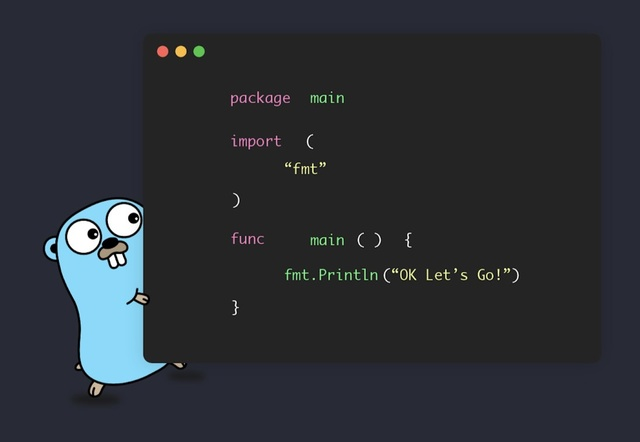

Простота синтаксиса
Одним из главных преимуществ языка программирования Go является его лаконичный и интуитивно понятный синтаксис. В отличие от многих других языков, таких как C++ или Java, Go избегает избыточных конструкций, что делает код более читаемым и легким для понимания.
Например, для объявления переменной используется оператор :=, что позволяет разработчикам быстро и удобно создавать переменные без необходимости указывать их тип. Блоки кода ограничиваются только фигурными скобками, без лишних символов и конструкций, что позволяет сосредоточиться на логике программы.
- Лаконичность: меньше строк кода для достижения результата.
- Простота: легкость в понимании и обучении.
- Современные подходы: поддержка параллелизма и сетевого программирования.
Пример программы на Go
Эта простая программа демонстрирует базовые принципы языка Go: простота структуры файла и минимализм кода. Даже самая сложная программа в Go сохраняет такой стиль, что делает его идеальным выбором для начинающих программистов.
Сравнение с другими языками
| Язык | Синтаксис | Подход к параллелизму |
|---|---|---|
| Go | Лаконичный и простой | Горутины и каналы |
| Python | Читаемый, но может быть медленным | Многопоточность через библиотеки |
| C++ | Сложный и многословный | Многопоточность через стандартные библиотеки |
Как видно из таблицы, Go предлагает более простой синтаксис и эффективный подход к параллелизму по сравнению с другими языками программирования.
Заключение
В заключение, язык Go предлагает множество преимуществ для программистов всех уровней. Его простота, лаконичность и современный подход к разработке делают его отличным выбором для создания различных приложений, от веб-сервисов до системного программного обеспечения.